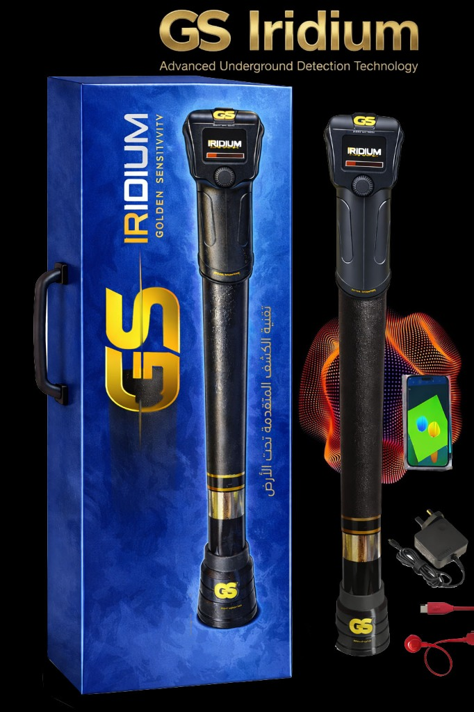
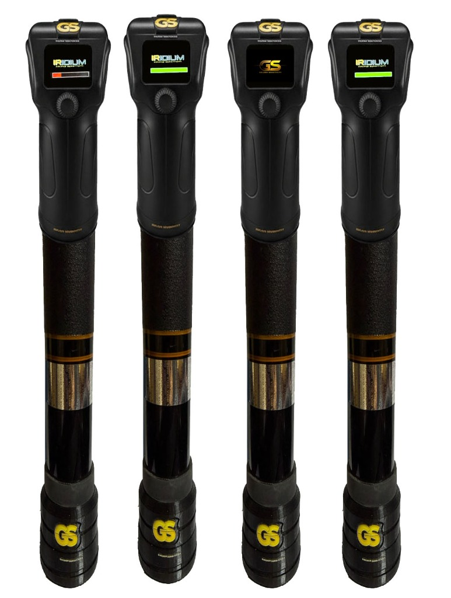
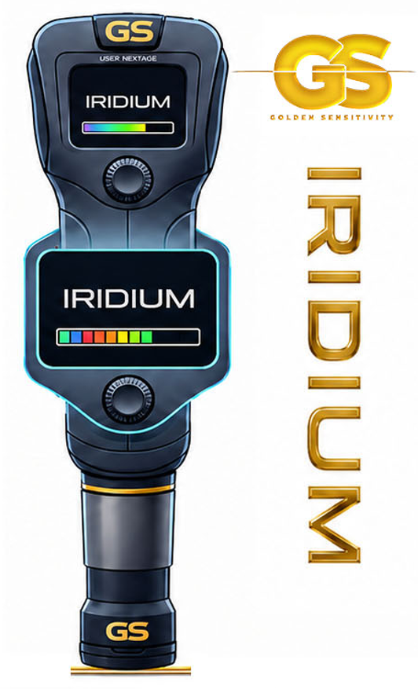

أعماق 12m 🚀



SWEDISH TECHNOLOGY - GOLDEN SENS
جهاز GS Iridium 3D
1,800 €
وضعيات مسح مرنة تلائم كافة التضاريس. يمنحك الجهاز خيارات متعددة لمسح التربة وتحديد ما تحت الأرض بأساليب مختلفة ودقيقة.
المواصفات الفنية والتقنية:
الاستفسار والطلب الفوري عبر الواتساب
تحميل GS_Iridium دليل الاستخدام (PDF)
- المسح النقطي الموجه: كشف دقيق ومحدد للأهداف.
- المسح التلقائي المستمر: مسح مساحات واسعة بسلاسة.
- التصوير اللحظي الفوري: إظهار نتائج المسح في الوقت الفعلي.
- مؤشر الموازنة والاستقرار: استقرار عالٍ في كافة أنواع التربة.
- التحليل المتقدم للأهداف الثمينة: تمييز الذهب والمعادن الثمينة.
- نظام تمثيل مرئي ذكي: رسومات وبيانات ثلاثية الأبعاد واضحة.
- توجيه لوني للأهداف: الألوان المحددة لنوع المعدن والفراغ.
- التعرف الذكي وحفظ الأهداف المخصصة: تخزين بيانات المسح الميداني.
- نظام صوتي متجاوب: تنبيهات صوتية واضحة ومقترنة بالعمق.
- نظام ذكي لإدارة الطاقة والشحن: بطارية تدوم لساعات طويلة من العمل.
- احترافية وسهولة في الحركة: تصميم مريح خفيف الوزن.
- دعم متعدد للغات: واجهات عالمية سهلة الاستخدام.
- دمج متعدد للترددات: تحديد المعادن والكنوز بدقة متناهية.
- تحليل متقدم عبر برنامج GS MAGNOVA: معالجة ثلاثية الأبعاد احترافية.
- تصوير الجدران وبجميع الاتجاهات: كشف كامل للمباني والكهوف والجدران.
- دليل الاستخدام: كراسة التعلم والتشغيل الميداني متوفرة بصيغة PDF للتحميل المباشر.